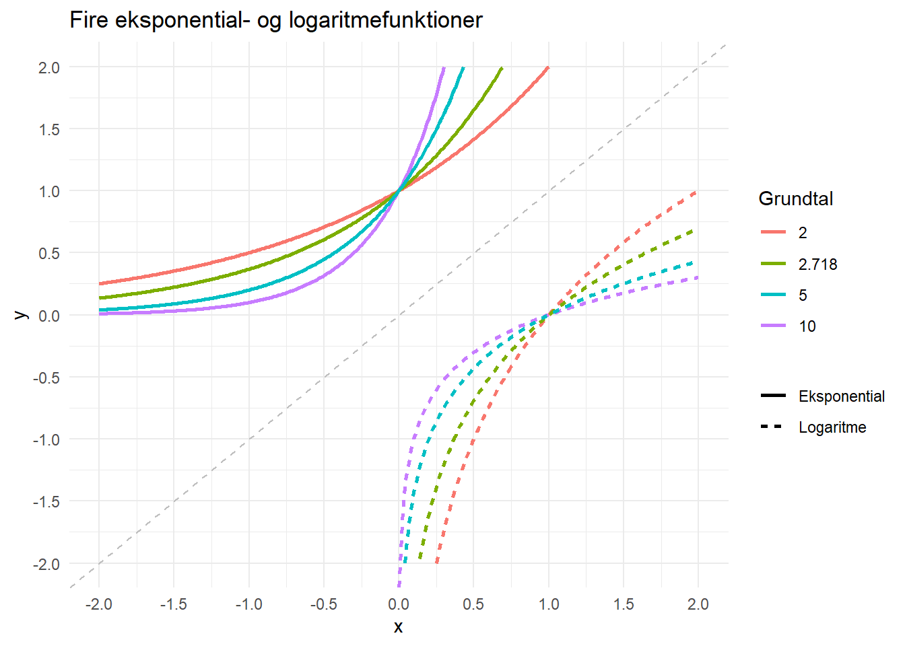

Logaritmer
Hvad er logaritmefunktioner?
Logaritmefunktioner kan være lidt forvirrende, for de kan bedst forstås som de omvendte funktioner af eksponentialfunktioner. Det betyder så, at vi skal forstå både hvad omvendte funktioner og eksponentialfunktioner er. Heldigvis er der ingen af de to ting der hver for sig er særligt svære.
Eksponentialfunktioner
Eksponentialfunktioner er funktioner der har formen:
\[ f(x) = b \cdot a^x \] Det bemærkelsesværdige er her, at \(x\) er eksponent, og ikke grundtal som vi kender det fra for eksempel andengradsligningen: \(f(x) = x^2\).
Du har måske allerede nu en fornemmelse af, at eksponentialfunktioner kan vokse meget hurtigt, for hvis \(x=10\) skal \(a\) ganges med sig selv 10 gange, og det kan godt blive et meget stort tal (i hvert fald så længe \(a\) er større end 1.)
Lad os prøve at tegne en enkel eksponentialfunktion: \(f(x) = 2^x\). I det her tilfælde er \(b = 1\) og \(a=2\).
Som nævnt og som vi kan se, er der tale om en funktion der vokser meget hurtigt. Hvis vi kigger på de markerede punkter, ser vi: \(f(5) = 2^5 = 32\). Og \(f(0) = 2^0 = 1\). Og \(f(-5) = 2^{-5} = \frac{1}{2^5} = \frac{1}{32} \approx 0,03\)
Når \(x\) er stor, er \(f(x)\) altså meget stor, og når \(x\) er negativ er \(f(x)\) meget lille.
Lad os prøve med tre forskellige værdier af a, \(a = 2, 3, 4\) og se, hvad der sker.
Vores graf fra tidligere, hvor \(a=2\) ser pludselig ikke længere så stejl ud, fordi de andre vokser endnu hurtigere, og alle tre kurver sprænger hurtigt koordinatsystemet.
Læg mærke til de markerede punkter, hvor \(x=1\). Her er y-værdierne det samme som \(a\), altså 2, 3, 4. Fordi \(x^1 = x\) uanset hvad \(x\) er.
Læg også mærke til, at alle graferne skærer hinanden i \((0,1)\). Det er fordi \(x^0 = 1\) uanset hvad \(x\) er.
Kan du se, hvad der sker, hvis \(a<1\)? Lad os prøve at tilføje \(a=0{,}5\) til grafen.
Vi kan se, at grafen hvor \(a=0{,}5\) opfører sig omvendt: Den nærmer sig hurtigt 0 når \(x\) vokser, men stiger, når \(x\) har en større og større negativ værdi. Det er ikke så mærkeligt, tænk for eksempel på: \(0{,}5^4 = 0{,}0625\), mens \(0{,}5^{-4} = \frac{1}{0{,}5^{4}} = 16\)
Omvendte funktioner
Nu hvor vi har styr på eksponentialfunktioner, er turen kommet til omvendte funktioner. En funktion er den omvendte til en anden funktion, hvis de “ophæver” hinanden. For eksempel er \(f(x) = x^2\) den omvendte funktion til \(g(x) = \sqrt{x}\) fordi anden potens ophæver kvadratroden: \(\sqrt{x}^2=x\). Eller skrevet lidt mere generelt: \(f(g(x))=x\), så funktionen \(f\) har her “ophævet” \(g\).
Et andet eksempel: Lad os sige, at \(f(x) = 2x\) som vi kan tegne som en ret linje med hældningen 2. Vi skriver den omvendte funktion til \(f(x)\) sådan her: \(f^{-1}(x)\). I det her tilfælde er \(f^{-1}(x) = \frac{1}{2}x\). Vi kan se, at \(f^{-1}(x)\) ophæver \(f(x)\) med et eksempel:
\[ f(3) = 2 \cdot 3 = 6\]
\[ f^{-1}(6) = \frac{1}{2} \cdot 6 = 3\] \(f\) laver et tre-tal om til et seks-tal, og \(f^{-1}\) seks-tallet tilbage til et tre-tal.
Vi kan lidt mere generelt demonstrere, at de to funktioner er hinandens omvendte, sådan her
\[ f^{-1}(f(x)) = \frac{1}{2} \cdot f(x) = \frac{1}{2} \cdot 2x = x\]
Eller vi kan se det visualt med et plot, sådan her:
De to funktioner er hinandens omvendte, fordi de spejler hinanden i den grå, stiplede diagonallinje. Eller fordi man skifter mellem de to, ved bare at bytte om på x-aksen og y-aksen.
Logaritmefunktioner
Det kan godt være, man lige skal tygge lidt på eksponentialfunktioner og omvendte funktioner, men når man har gjort det, så er logaritmefunktioner faktisk ret nemme: De er nemlig de omvendte af eksponential funktioner.
For eksempel:
\[ f(x) = 10^x \] \[ f^{-1}(x) = log_{10}(x) \]
\(log_{10}(x)\) kaldes 10-talslogaritmen og det er en funktion, der svarer på spørgsmålet: Hvad skal 10 opløftes til, for at få \(x\)? Altså: \(log_{10}(10) = 1\) fordi 10 skal opløftes til 1 for at få 10. Og \(log_{10}(100) = 2\) fordi 10 skal opløftes til 2 for at få 100.
10-talslogaritmen, \(log_{10}(x)\), er altså det omvendte af \(10^x\). Det vil sige: \(log_{10}(10^x) = x\).
Lad os prøve at tegne grafen for både \(f(x) = 10^x\) og dens omvendte funktion \(f^{-1}(x) = log_{10}(x)\):

Man kan se, at logaritmefunktionen, \(log_{10}(x)\) er et spejlbillede af eksponentialfunktionen \(10^x\). Det markerede punkt, \((0,1)\) ligger på eksponentialfunktionen,fordi \(10^0 = 1\) og \((1,0)\) ligger på logaritmefunktionen, fordi \(log_{10}(1) = 0\) fordi ti skal opløftes til 0 for at give én.
Læg mærke til, at logaritmefunktionen ikke er defineret for \(x<0\) fordi man ikke kan opløfte 10 til noget og få et negativt tal ud af det. På samme måde kan \(10^x\) aldrig være negativ (kun meget lille).
Den naturlige logaritme
Der findes mange forskellige eksponentialfunktioner med forskellige grundtal, dem vi kaldte \(a\) i starten, som i: \(2^x\), \(2{,}718^x\), \(5^x\), eller vores ven herover: \(10^x\). Tilsvarende findes der også forskellige logaritmer: \(log_2(x)\), \(log_{2,718}(x)\), eller \(log_5(x)\) eller \(log_{10}(x)\).
Lad os lige for sjov skyld tegne dem alle sammen:

Måske lagde du mærke til, at ét af grundtallene i figuren er lidt sjovt: 2,718. Det tal er en ret vigtig konstant i matematikken, nemlig \(e\), som også nogle gange kaldes “Eulers tal”, opkaldt efter den Schweiziske matematiker, Leonard Euler.

\(e\) er, ligesom for eksempel \(\pi\), et irrationelt tal, det vil sige et tal, der har uendeligt mange decimaler. \(e\) starter sådan her: \(e=2{,}718281828459\)
Når \(e\) er grundtal i en logaritmefunktion kalder man det for den naturlige logaritme. Man kan skrive det på forskellige måder; nogle gange kalder man den naturlige logaritmefunktion for \(ln(x)\) i stedet for \(log(x)\) Altså:
\[ log_e(x) = log_{2,718}(x) = ln(x) \]
Men hvad er det, der er så naturligt ved et så mærkelig tal som \(e\)? Én ting, som på en måde er naturligt, er, at tangenten til \(ln(x)\) i punktet \((1,0)\) er en linje med hældningen 1.
For bedre at se, hvad jeg mener med det, så lad os tage figuren fra før, og fokusere på den naturlige logaritme og den tilsvarende eksponentialfunktion:
Tangenten er den rette linje som lige akkurat strejfer grafen i et bestemt punkt (røringspunktet) og viser, hvor stejl grafen er, lige i det punkt.
(Der er meget mere om tangenter i Hvad er differentialregning?. Her kan man også se endnu en naturlig egenskab ved den naturlige logaritme: Den afledte funktion er simpelthen bare den samme: Hvis \(f(x) = e^x\) så er \(f'(x) = e^x\))
I figuren kan man se tangenten til den naturlige logaritmefunktion i punktet \((1,0)\) og den tilsvarende tangent til eksponentialfunktionen i punktet \((0,1)\). Begge tangenter har en hældning på netop 1 – hvilket føles ret naturligt.
Hvad kan man bruge det til?
Nu hvor vi har både eksponentialfunktioner og deres omvendte, logaritmefunktioner, under kontrol, må vi heller finder ud af, hvad vi egentlig kan bruge dem til?
Vækst
Begge typer af funktioner er for eksempel gode, når det handler om vækst: Hvis et-eller-andet vokser med så-og-så-meget, i et bestemt tidsrum, hvor meget ender der så med at være.
For eksempel: Lad os sige, at en gruppe bakterier fordobler deres antal hver time. Det er ikke helt urealistisk, for bakterier kan vokse virkeligt hurtigt, hvis forholdene er til det. Hvis man starter med 100 bakterier når der er gået 0 timer, så har man altså 200 bakterier efter 1 time. Efter 2 timer fordobles antallet igen, og man har 400 bakterier. Efter 3 timer har man 800 bakterier, efter 4 timer 1.600 bakterier og efter 5 timer 3.200 bakterier.
Der er taler om en eksponentialfunktion der ser sådan her ud:
\[ f(x) = 100 \cdot 2^x \] Hvilket jo svarer til den generelle form:
\[ f(x) = b \cdot a^x \]
Hvor \(b\) er det antal vi startede med, nemlig 100 bakterier, og \(a\), grundtallet, er vækstfaktoren, her 2 fordi vi taler om fordoblinger. \(x\) er så tidsenheden, her antal timer. Selve funktionen, \(f(x)\), fortæller os så, hvilket antal bakterier vi har efter \(x\) timer. Vi fandt jo, at \(f(5) = 100 \cdot 2^5 = 100 \cdot 32 = 3.200\) bakterier.
Vi kunne også bare fokusere på væksten altså \(a^x\) hvor \(2^5=32\) fortæller os, at efter 5 timer er antallet af bakterier 32-doblet. Hvis vi starter med 1 bakterie ender vi efter 5 timer med 32. Og hvis vi starter med 1000 ender vi på 32.000.
Logaritmen er så den omvendte funktioner, så den kan svare på det omvendte spørgsmål: Hvor lang tid går der før antallet af bakterier er for eksempel 100-doblet. Vi spørger med andre ord hvad \(x\) skal være, for at \(2^x\) er 100. Svaret er \(log_2(100) \approx 6{.}64\) Det tager 6,64 timer for gruppen af bakterier at 100-doble sig selv.
Vi kan ikke på nogen nem måde selv regne ud hvad \(log_2(100)\) er, så vi må bruge en lommeregner.
Et andet eksempel på vækst:
Hvis jeg investerer 1 krone på en måde så investeringen vokser med 7% om året, hvor mange penge er der så efter 25 år?
Efter 1 år er den ene krone blevet til 1,08 kroner (den ene er den krone vi startede med, de 0,08 er afkastet på 8% efter det første år.) Efter to år er kronen blevet til \(1{,}08 \cdot 1{,}08 = 1{,}08^2\approx 1{,}17\) fordi man efter andet år får 8% af de 1,08 kroner man nu har.
Efter 25 år er den ene krone blevet til \(1{,}08^25 \approx 6{,}85\) kroner. Hvis man istedet for 1 krone var startet med 1.000 kroner ville resultatet bare være \(1.000 \cdot 1{,}08^25 \approx 6.848\) kroner.
Hvor lang tid skal der gå, før den ene kroner er blevet til én million kroner? Vækstfaktoren, eller grundtallet \(a\) er som sagt 1,08, så det er også det grundtal vi skal bruge i logaritmen: \(log_{1,08}(1{,}000{,}000) \approx 180\) år.
Okay, det er ret lang tid at vente, men det er også temmeligt vildt, at 1 kroner kan blive til 1 million – selvom det måske så er dine oldebørn der får glæde af pengene.
Store tal og små tal
Hvis man har meget store tal, kan de være nemmere at overskue, hvis man enten skriver dem med eksponentiel notation eller tager logaritmen til dem.
Der er for eksempel 384.400 km fra Jorden til Månen, 54.600.000 km til Mars og 149.600.000 km til Solen. Det er lidt forvirrende med alle de nuller, og det bliver helt galt, hvis vi snakker om hele det observerbare universes størrelse. Det har nemlig en diameter på 880.000.000.000.000.000.000 km og det er mange nuller.
Nogle gange skriver man sådan et stort tal med et gangestykke: \(8{,}8 \cdot 10^{23}\) hvilket er det samme som at rykke kommaet 23 gange til højre, og sparer en del plads. Det kaldes eksponentiel notation, og kan også bruges på mindre tal, men det er ikke nødvendigt: \(1 \cdot 10^2 = 100\) eller \(5{,5} \cdot 10^3 = 5500\).
Endelig kan man også gøre det endnu kortere ved at tage logaritmen, og dermed fokusere på eksponenten for at få de store tal ned på en lidt mere håndterbar skala: \(log_{10}(10^{23}) = 23\). Eller hvis vi tager Universets diameter fra før: \(log_{10}(8.8 \cdot 10^{23}) = 23{,}9\).
Sagt på en anden måde: Man skal gange 10 med sig selv 23,9 gange for at få Universets diameter (i km).
| Afstand | Længde i km | Eksponentiel notation | 10-tals logaritme |
|---|---|---|---|
| Jorden til Månen | \(384.400\) | \(3.8\cdot 10^5\) | \(5.6\) |
| Jorden til Mars | \(54.600.000\) | \(5.5\cdot 10^7\) | \(6.7\) |
| Jorden til Solen | \(149.600.000\) | \(1.5\cdot 10^8\) | \(8.2\) |
| Universets diameter | \(880\) … og 21 nuller | \(8.8\cdot 10^{23}\) | \(23.9\) |
Som du kan se, bliver det hele lidt nemmere ved at tage logaritmen til de meget store tal.
Sjovt nok gælder præcist det samme for meget små tal. Tjek tabellen herunder:
| Objekt | Størrelse i meter | Eksponentiel notation | 10-tals logaritme |
|---|---|---|---|
| Rødt blodlegeme | \(0.000008\) | \(8.0\cdot 10^{-6}\) | \(-5.1\) |
| Bakterie (E. coli) | \(0.000002\) | \(2.0\cdot 10^{-6}\) | \(-5.7\) |
| Virus (influenza) | \(0.0000001\) | \(1.0\cdot 10^{-7}\) | \(-7\) |
| Atom (hydrogen) | \(0.0000000001\) | \(1.0\cdot 10^{-10}\) | \(-10\) |
Løsning af ligninger
Emdelig findes der nogle regneregler for logaritmer, som kan være nyttige. En af de vigtige er:
\[log(x^n) = n \cdot log(x)\] Logaritmen til en potens er det samme som produktet af eksponenten, \(n\), og logaritmen til grundtallet, \(x\). (Og her er det lige meget hvilken logaritme man bruger – to-tals, ti-tals, den naturlige – så længe man bruger det samme på begge sider af lighedstegnet.)
Det kan være praktisk, hvis man har en ligning som denne:
\[ 3^{2x} = 81 \]
Og gerne vil finde \(x\). Man starter med at tage logaritmen på begge sider – lad os bruge titals-logaritmen som vi bare kalder \(log()\), men et hvilket som helst grundtal ville fungere:
\[ log(3^{2x}) = log(81) \]
Så bruger vi regnereglen fra før:
\[ 2x \cdot log(3) = log(81) \] \[ 2x = \frac{log(81)}{log(3)} \]
\[ x = \frac{log(81)}{2 \cdot log(3)} \]
Og ved at bruge lommeregneren finder vi ud af at:
\[ x = 2 \]
Lad os dobbeltjekke ved at sætte \(x=2\) ind i den oprindelige ligning:
\[ 3^{2x} = 3^{2 \cdot 2} = 3^4 = 81 \]
Det stemmer!
Men … hvordan kan vi være sikre på, at den regneregel vi brugte, \(log(x^n) = n \cdot log(x)\), er rigtig?
Her er et lille bevis – hold tungen lige i munden og giv dig god tid, så kan du godt følge tankegangen. Vi bruger igen ti-talslogaritmen, \(log(x)\):
Lad os sige at:
\[ log(x) = k \] Det er jo det samme som at spørge om, hvad vi skal opløfte 10 til, for få tallet \(x\). Derfor ved vi også at:
\[ x = 10^k \] Det er selve definitionen på logaritme.
Så kan vi opløfte til \(n\) på begge sider:
\[ x^n = ( 10^k)^n = 10^{kn}\]
(Det sidste lighedstegn kommer fra potensregnereglen \((a^m)^n = a^{m\cdot n}\) som du kan læse mere om her: Hvad er potenser og rødder?)
Så kan vi tage logaritmen på begge sider:
\[ log(x^n) = log( 10^{kn}) = kn\]
Sidste lighedstegn er fordi \(log(x)\) ophæver \(10^x\).
Fra allerførste ligning ved vi at \(log(x) = k\) og ved at sætte \(log(x)\) ind på \(k\)’s plads får vi:
\[ log(x^n) = n \cdot log(x) \]
Hvilket var lige det, vi gerne ville bevise!